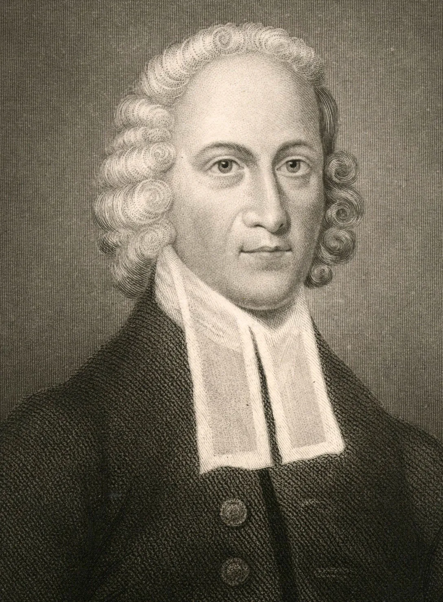

Jonathan Edwards was an American revivalist preacher, philosopher, and Congregationalist theologian. Edwards is widely regarded as one of America's most important and original philosophical theologians.
Edwards’s father, Timothy, was pastor of the church at East Windsor, Connecticut; his mother, Esther, was a daughter of Solomon Stoddard, pastor of the church at Northampton, Massachusetts. Jonathan was the fifth child and only son among 11 children; he grew up in an atmosphere of Puritan piety, affection, and learning. After a rigorous schooling at home, he entered Yale College in New Haven, Connecticut, at the age of 13. He was graduated in 1720 but remained at New Haven for two years, studying divinity. After a brief New York pastorate (1722–23), he received the M.A. degree in 1723; during most of 1724–26 he was a tutor at Yale. In 1727 he became his grandfather’s colleague at Northampton. In the same year, he married Sarah Pierrepont, who combined a deep, often ecstatic, piety with personal winsomeness and practical good sense. To them were born 11 children.
